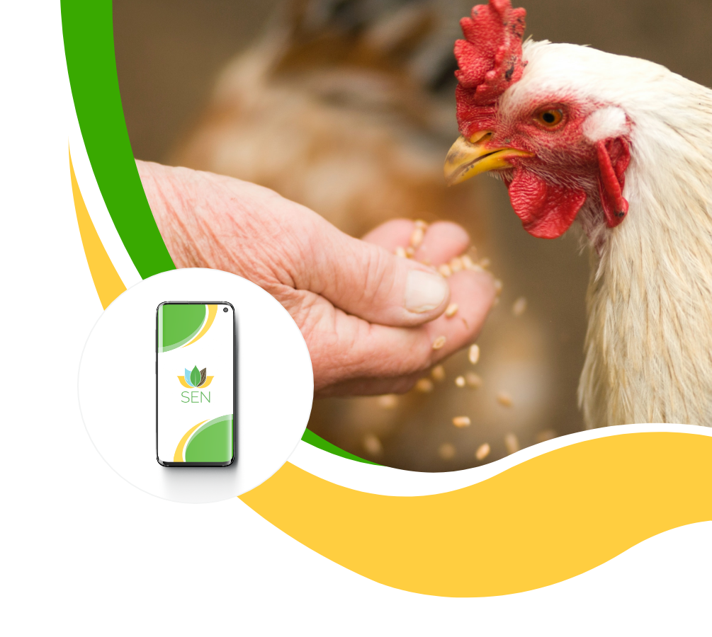

Conoce nuestra nueva App SEN
SEN es una aplicación móvil que permite crear preparaciones alimenticias que se adaptan especialmente a las diferentes especies según la fase en la que se encuentran

SEN es una aplicación móvil que permite crear preparaciones alimenticias que se adaptan especialmente a las diferentes especies según la fase en la que se encuentran